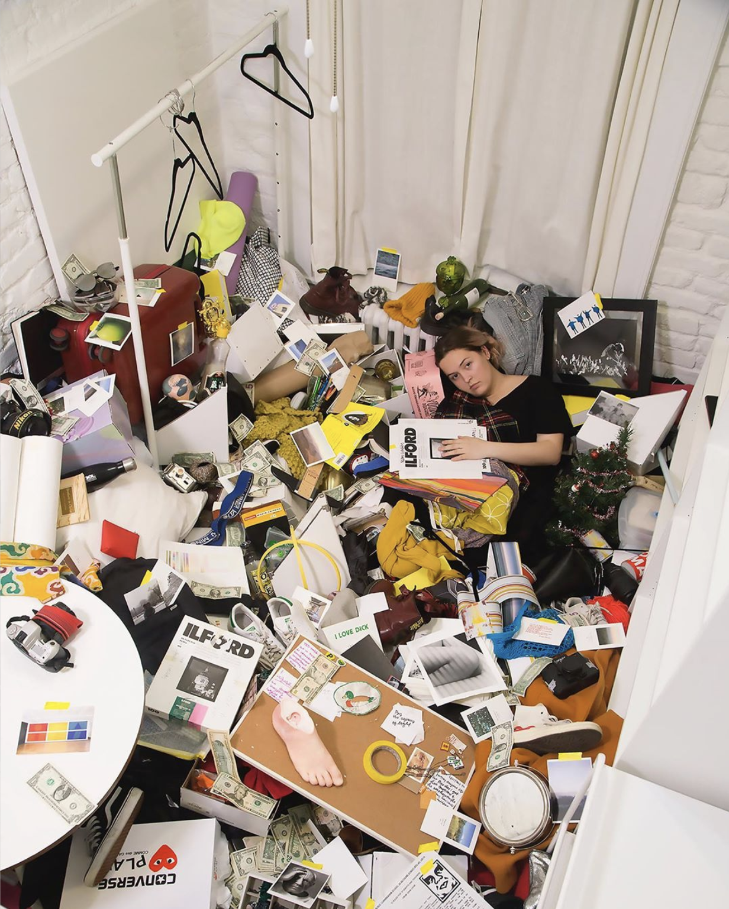
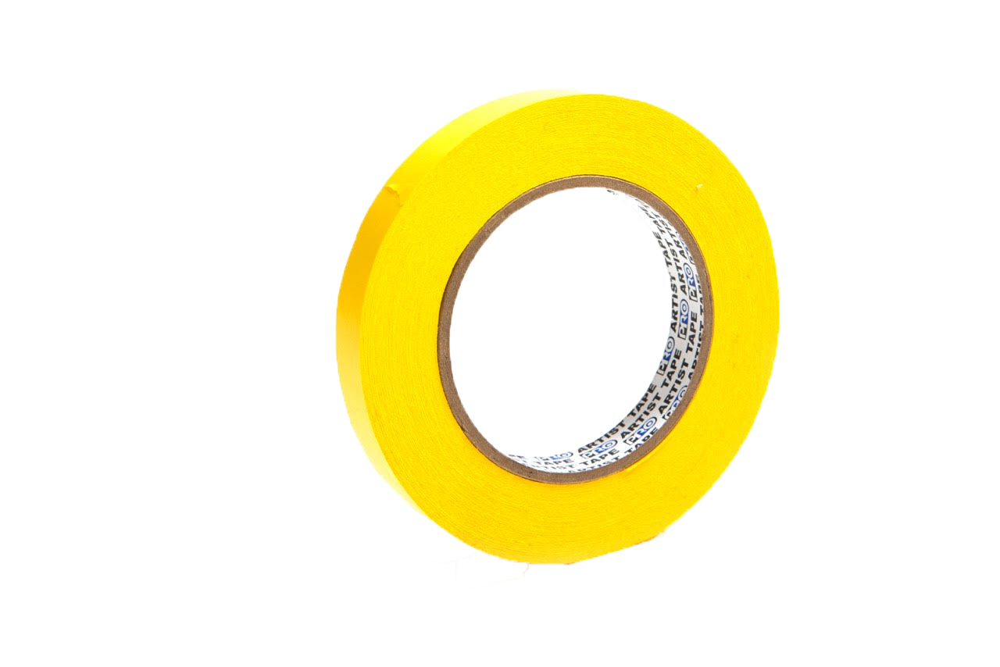
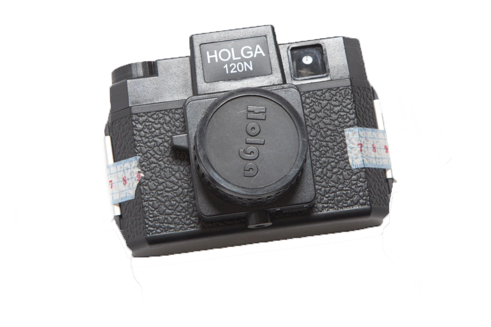

ARTIST STATEMENT
The Perch is what I call my 9x12ft New York City Apartment. For the last year and a half, I have lived alone in this space curating a collection that I have spent my life developing. When you live alone you get to decide what takes up room in your physical space. You make every decision. Living this every day I started to gravitate towards making art about myself through the physical objects I keep. I understand this project only works with a certain type of person, the sentimental collector, but I am one of those, so it worked.
Because of all of this, I decided to create an accordion book of everything I own; preserving what it looks like to be me at 20 in 2019 New York. I am recording myself through my objects because you can tell much more about a person through their stuff than their face. I am creating a comprehensive collection. The accordion book seems only natural because of its ability to be viewed one spread at a time or all at once, folded open across half a city block.
Museums such as the Henry Darger Room Collection and the Isabella Stewart Gardner Museum are collections of specific people that are long gone. Am I allowed to make a collection of myself now at twenty years old without having made a name for myself as an artist? Or will that right to archive and document my life for others to see only come when I am dead?
The book is a collectible version of me. I want the viewer to walk by or flip through all of my things, to familiarize themselves with me. The book is a documentation of the moving sculpture this all has become.


